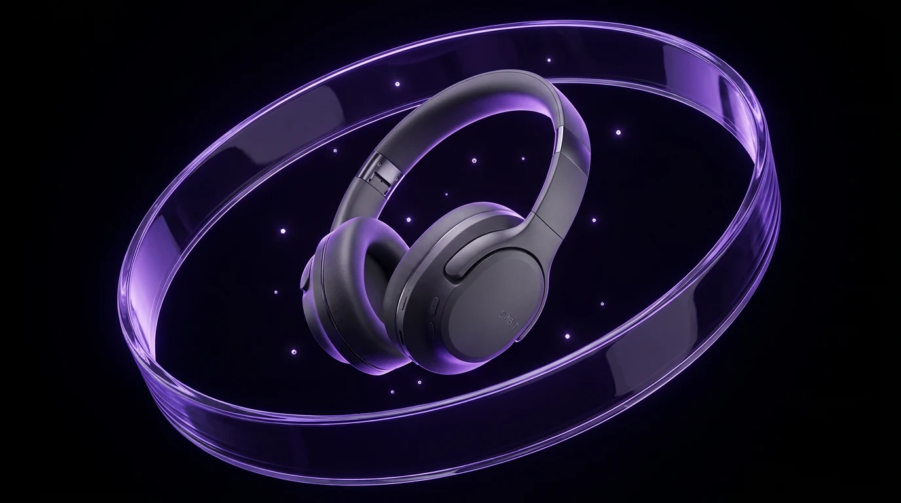

Beleza / Conceito de campanha / Imagem de produto
Design visual · Exploração com IA
Ideias que
ganham
presença.
Entre o conceito e a imagem, um novo ponto de vista. Explorações de marca, produto e cultura por Kayk Canova.
Explorar projetos São Paulo, Brasil / Portfólio independenteEXPLORATION / 002

O som ocupa espaço.Campanha conceitual com apoio de IA
01 / Projetos selecionados
Três universos. Novas possibilidades.
Marcas fictícias. Ideias originais. Estudos que conectam intenção, linguagem e aplicação.
Conceitual + IA
Cultura / Sistema visual / Design editorial
Áudio / Narrativa de produto / Campanha digital
Todos os projetos são estudos independentes criados com apoio de IA. Não representam clientes, produtos comercializados ou campanhas veiculadas.
02 / Da ideia à imagem
A imagem começa
com uma intenção.
O processo destes estudos: definir uma pergunta, explorar caminhos e dar consistência às aplicações.
01 /
Encontrar o conceito
Um público, uma ideia central e uma mensagem clara para orientar cada decisão visual.
02 /
Explorar a linguagem
Luz, materiais, tipografia e cor. IA para imagens; composição vetorial para construir o sistema.
03 /
Conectar as peças
Do visual principal às peças digitais, com fontes editáveis e limites de produção documentados.
03 / Sobre o criador
Curiosidade como
ponto de partida.
Sou Kayk dos Santos Canova, também conhecido como Fallen, de São Paulo. OGFallen Designs é o espaço onde reúno meus interesses por design visual, tecnologia e expressão artística.
Esta seleção explora possibilidades de campanhas com apoio de IA. Cada case apresenta seu briefing fictício, decisões visuais e aplicações, com transparência sobre como foi produzido.
Leve os conceitos com você.